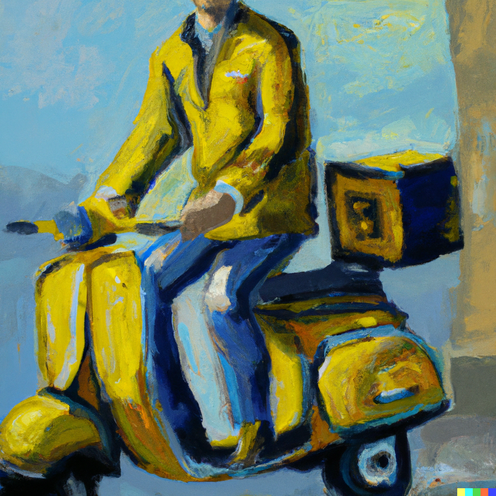
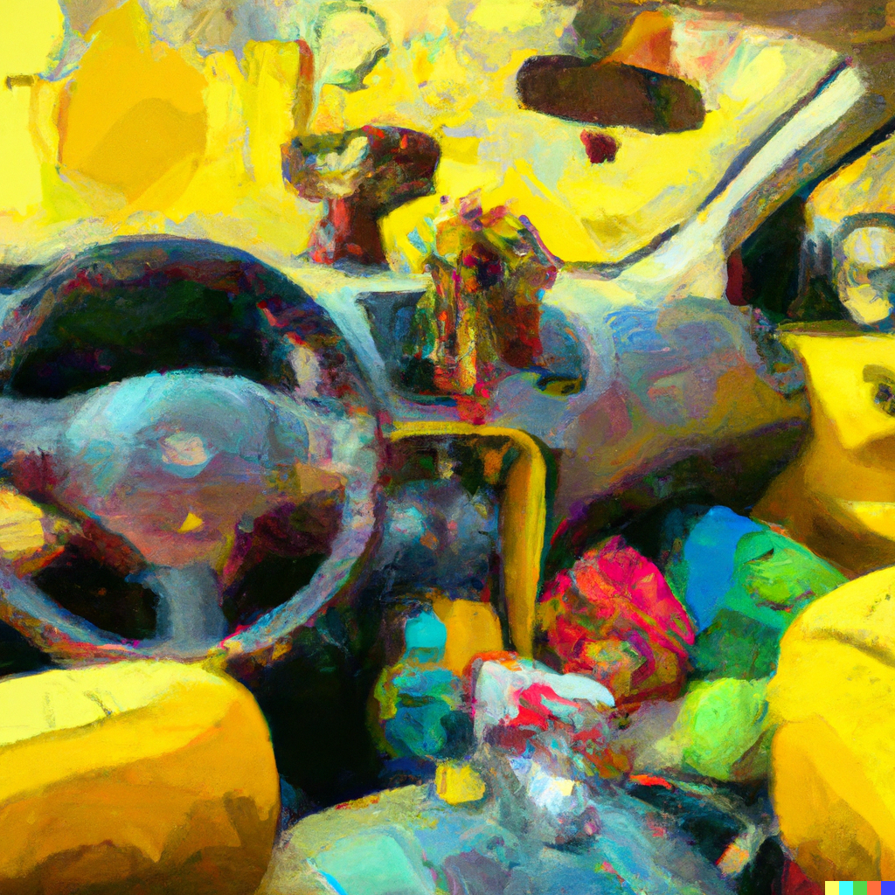
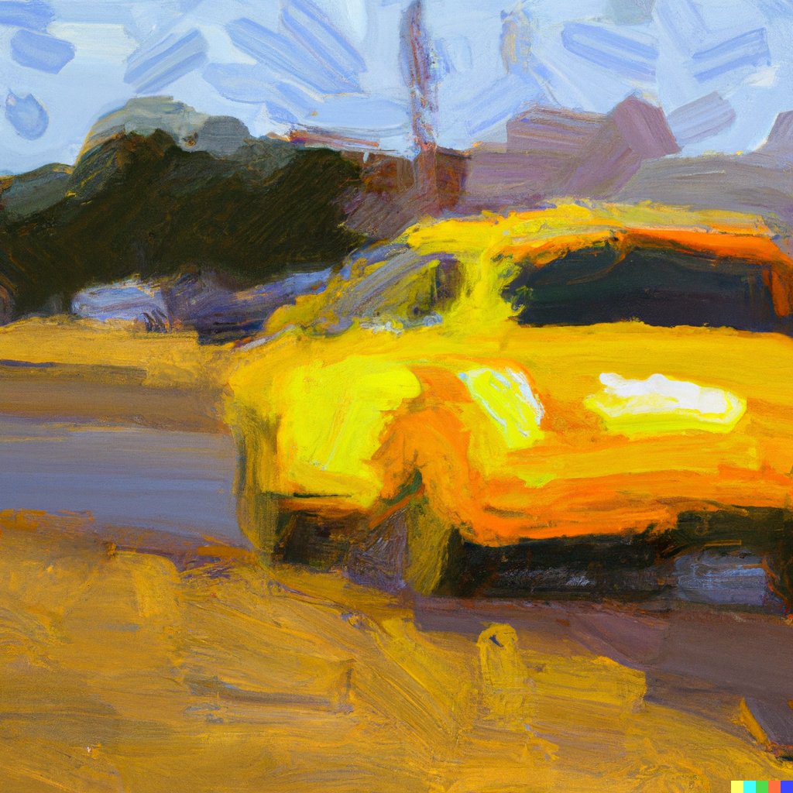
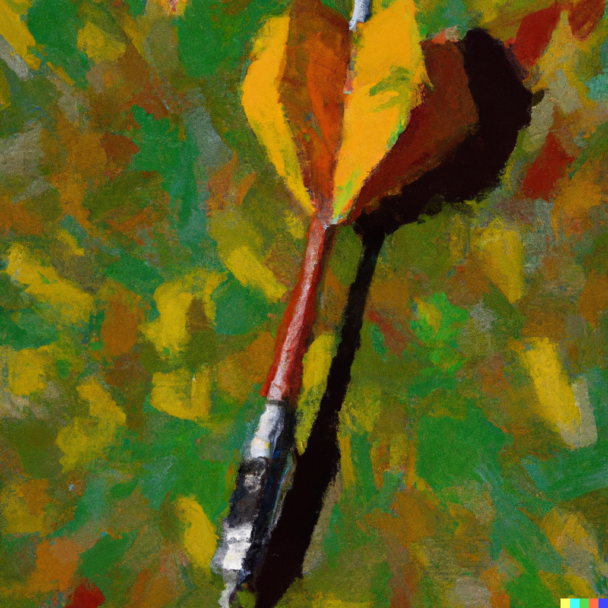

Sveglio. Dentro la schiena sentivo lo schianto di una roccia su una vetrata. Saranno state le 4:30 di notte, il telefono era sotto il cuscino con il 2% di batteria. Avevo inviato dei messaggi assurdi solo qualche ora prima, due dolcissimi a una semisconosciuta ed un altro a quella stronza della mia ex. Mi alzai dal letto, il pavimento era talmente caldo da far pensare che la pelle della pianta dei piedi si sarebbe appiccicata e staccata rimanendo li, come un’impronta. Andai verso il bagno per pisciare. Lungo il corridoio colpii un quadro che oscillò e, frusciando sul muro, produsse un suono del tutto simile a quello di una serpe tra le sterpaglie. Ebbi paura. Ho il terrore dei serpenti e ne avevo appena sognati una dozzina mentre si dimenavano e mi cingevano le caviglie. Rabbrividii e pisciai. Avevo la bocca impastata e mi sentivo ubriaco, anche se, la notte prima, avevo bevuto giusto un bicchiere di vino rosso. Non dormivo più, era quello il vero motivo di questa mia stanchezza cronica. Era una sensazione orribile. Dal momento della sveglia sino alla sera ero come intontito, ovattato. Poi mi stappavo e tornavo in forze sino al crollo a notte fonda. Non dormivo quasi più e non avevo mai del tutto sonno. Altre tre settimane ed il mio contratto da postino sarebbe finito. Mi piaceva un sacco quel lavoro, lo facevo da 10 mesi. Girare con lo scooter verso le case di sconosciuti, in una zona di campagna come questa, era in fin dei conti rilassante e leggero. Certo non l’avrei voluto fare per tutta la vita ma un altro anno così lo avrei ripetuto volentieri. Avevo finalmente potuto sloggiare da casa dei miei e me ne stavo per conto mio in questo piccolo ma grazioso fienile rimesso. Stavo li col mio computer, la mia chitarra, le mie idee ed i miei sogni d’artista.
Infilai il sotto del pigiama e decisi di uscire a respirare l’aria delle 5 la mattina. Era domenica e volevo viverla con tutti i tipi di luce quella giornata. Scesi lungo il vialetto di ghiaia che faceva un rumore splendido sotto i miei passi. Passai vicino alla mia Fiat e la accarezzai come fosse il mio cane. Camminavo un po’ a zig zag senza sapere dove di preciso volessi andare. Non mi interessava in effetti. Quell’aria fresca, quasi fredda, era un elisir per i miei bronchi rocciosi e la mia decisione di uscire, anziché cimentarmi in una dormita di stenti sino a mezzogiorno, era stata giusta. Mentre scendevo verso il paese, mi ero improvvisamente dato quella destinazione, capitò una di quelle cose che sogni poco prima di addormentarti: una turista olandese, sola, giovane e bella che si è persa. Mi vide ed iniziò ad avvicinarsi. In quei quindici secondi che ci separavano dovevo fare un esame rapido e preciso del mio inglese. Ok, tutto al right, A sgana wei. Ero pronto. Faccio per pronunciare la prima parola e.. sorpresa delle sorprese era italiana come me. “Hell..c..ciao!” “Ciao, buongiorno” “Ahah, scusami! Ero già partito con l’inglese, se così si può chiamare il mio, ero sicuro fossi una turista straniera!” Ero completamente impazzito, come sempre. Parlavo velocissimo e anziché mostrarmi calmo, superiore e signorile sembravo un venditore di pesce del mercato centrale. “..Si.. me lo dicono spesso che non sembro affatto italiana” Mi ricomposi con le spalle, misi le mani sui fianchi e risposi: “Vero. Cosa ci fai, se posso saperlo, in questo paesino dimenticato da dio e per di più alle 5 di mattina?” Lei sorrise e vidi i suoi denti bianchissimi, perfetti e sinceri. Fu in quel momento che capii che era una sognatrice come me. “Puoi benissimo darmi della pazza, della deviata mentale se vuoi, ma ieri notte, era l’una o poco più, proprio non riuscivo a dormire; sai, “una di quelle notti”... Dunque ho lanciato una freccetta sull’enorme carta dell’Italia che ho appesa dietro la porta di camera, cercando di colpire una zona fattibile, ed è uscito questo tuo paese dimenticato da dio. Ho preso le sigarette, una bottiglia d’acqua, 2 pacchetti di biscotti e sono partita. Conosci la sensazione..?… guidare.. la notte.. l’estate.. i Creedence Clearwater Revival.. e sono arrivata dove la sorte mi ha portato, alle 5 la mattina senza neanche una sosta. Per fare questo tipo di cazzate ci vuole più a dirlo che a farlo alla fine, è proprio vero” La ascoltavo e già immaginavo noi due ubriachi a baciarsi, a ridere, a mangiare un panino in mezzo a un bosco di castagni. Riattaccai a parlare, ero già innamorato di quella creatura: “Se davvero è andata così, più che pazza, ti considero una persona normale o, male che vada, sono pazzo anche io e finalmente mi va bene così. Di cosa avevi bisogno? Volevi delle indicazioni? ” Portò l’indice sulla bocca e mi disse : “No, ho bisogno di un favore: il mio telefono è completamente scarico e ho bisogno di fare una telefonata, sai.. mia madre è come me mentre mio padre potrebbe essere preoccupato!” “Povero babbo ! Certo che dobbiamo chiamarlo! C’è un piccolissimo problema, ho il telefonino a casa, sto qui vicinissimo, andiamo su con la tua macchina, telefoni e poi, se vuoi, ti trovo una mappa e ti faccio tirare un altro paio di freccette, tanto per proseguire il tuo viaggio” “Ok!” Mi disse sorridendo. Aveva parcheggiato appena dietro la curva. La sua macchina, gialla come una pallina da tennis, era piena zeppa di libri, fogli scritti e pacchetti di sigarette vuoti. Dentro c’era un flebile odore di lavanda. Amavo lei e la sua auto.
Girò le chiavi, si accese lo stereo e partì a tutto volume “Lookin’ out my back door” dei Creedence. Già: la canzone del grande Lebowski. Per la prima volta ero sveglio come non lo ero da mesi e, sempre per la prima volta dopo molto tempo, ero felice di vivere e di poter sperare che le piccole fantasie ogni tanto si avverano. Arrivammo a casa mia, vidi che le piacque molto il posto. Entrai velocissimo e mi precipitai in bagno. Ero certo di non aver tirato lo sciacquone e che il lavandino fosse blu dal dentifricio. Non volevo passare da cafone. Uscii in un attimo e lei, Lei era ancora li, sulla soglia, che osservava il totale disordine ma, allo stesso tempo, ammirava il gusto che avevo avuto nel disordinare tutte quelle cose. Fu in quell’esatto istante che riuscii a metterla a fuoco, a guardarla tutta. Era alta, i piedi grandi, le gambe magre e drittissime chiuse in un jeans morbido, liso e aderente. Sopra aveva una maglietta bianca enorme, con lo scollo a barca che mostrava le sue scapole deliziose. Sotto indossava una canottiera nera ancora più lunga della maglina che le copriva la patta dei pantaloni. Non era truccata e si notava che era un po’ stanca dal viaggio. In quel viso dalla pelle morbida dominavano due occhi azzurri rotondi, grandi e bellissimi, incorniciati da delle ciglia lunghissime e delle sopracciglia grandi, spesse e marcate. I capelli color grano accompagnavano con la loro incredibile lunghezza la sinuosità e la perfezione delle sue braccia sino alle mani. Era bellissima ed era li, in piedi sulla soglia di casa mia. Sospirai. Presi il telefono che si trovava ancora sotto il cuscino, era spento, completamente scarico. Lo misi in carica e nel frattempo preparai il caffè. Accesi la musica al computer, scelsi Nina Simone, non potevo sbagliare, almeno con la scelta della musica. Mi fece qualche apprezzamento sui libri che possedevo e mi prese un po’ in giro per il poster di Bukowski. Bevemmo il caffè in silenzio, lo prendeva amaro anche lei. Amavo lei, la sua macchina gialla e il caffè amaro che le si posava sulle labbra. Staccai il telefonino dal cavo e glielo prestai. Era ancora prestissimo e, da brava figlia, preferì inviare un sms piuttosto che far sobbalzare dal letto il povero babbo, di domenica poi. Scrisse il messaggio, lunghissimo, lo rilesse, lo inviò e lo cancellò dalla memoria. Scosse le spalle sorridendo, si diresse verso la porta e mi ringraziò in modo buffo e irriverente : “Grazie mille delle gentilezze che mi avete concesso, adesso lascio il vostro feudo per proseguire ancora un po’ il mio viaggio e, non appena sarà giusto, rientrerò nella mia terra natìa” Avevo capito benissimo che se ne voleva andare, lo stava facendo in modo simpatico, rispettoso e netto. Non cercava me. Forse non cercava nessuno o niente in particolare. Feci un inchino e la salutai così: “Stare ai suoi servigi è stato per me gratificante e delizioso, darle questo addio è logorante e maledettamente ruvido. Addio” mi guardò negli occhi e rispose : “Se mi troverai, se ci riuscirai, ti prometto il mio caffè amaro, una tazza o poche gocce, quanto ne gradirai” Sembrava che avesse letto nel mio pensiero. Sembrava che mentre osservavo, pochi minuti prima, quelle poche gocce di caffè che si posavano sulle sue labbra e le desideravo sulle mia, lei lo sapesse, se ne fosse accorta. Mi avvicinai per capire meglio e chiuse la porta. Accese la sua macchina gialla e partì.
Alzai il volume delle casse del pc, fino al massimo, fino a farle gracchiare come un corvo, mi buttai a pancia in giù sul letto e mi disperai ripensando a quanto ero un coglione, un tonto. Sferrai un pugno sul cuscino dalla rabbia poi, d’improvviso, feci un grosso respiro, mi alzai e bevendo un bicchiere d’acqua ghiacciato mi misi a pensare. “Mi ha detto di essere partita appena dopo l’una di notte, mettiamo le una e venti, è arrivata qui alle cinque, mi ha detto di non aver fatto nessuna sosta, ho letto la provincia sulla targa della sua auto, l’accento in effetti corrisponde, entrando in macchina ho notato il porta tagliando dell’assicurazione, rosso, con un nome buffo..composto da “auto” e qualche “z”..autozzi, autouzzi, automazzi, autozizzi, aut..era rosso quel porta tagliandino…auto zitti…AUTOZATTI!” Andai subito a cercare e la notizia fu sorprendente : quel concessionario esisteva, era in un paesino di 5000 abitanti nella provincia che riportava la targa ed era anche plausibile il tempo che lei aveva impiegato per arrivare sin qua. La macchina era sporca, c’erano molti aghi di pino incastrati sotto i tergicristalli dunque doveva parcheggiarla fuori, per strada, non in garage. Bastava girare tutto il paesino e trovare quella macchina gialla. Il giorno dopo sarei andato a lavoro ma martedì avrei preso ferie, sarei partito e l’avrei trovata. Ero felice, di nuovo, dopo la rabbia e la disperazione. La speranza sotterrava tutto il resto. Il lunedì finì presto tra il lavoro, le mie ricerche, i miei itinerari e le mappe. Martedì, ore 15:30, partenza. Ghiaia, stradina, strada, superstrada, autostrada, superstrada, strada, stradina. Vedo il cartello del paese e mi emoziono. Il viaggio è schioccato veloce come un lampo. Giro per tutto il paese lentamente, in macchina, inforcando gli occhiali per vederci meglio. Sembro uno della CIA. Incappo in un viale pieno di pini, giro a sinistra verso dei giardinetti costeggiati da delle villette verdi. Inchiodo. Sono le 20:00 e vedo la macchina gialla, è la sua. Il cuore impazzisce, parcheggio urtando violentemente contro il marciapiede. Tolgo gli occhiali, scendo e respiro. Risalgo. Avevo deciso di indossare di nuovo il pigiama con gli orsetti che si inchiappettano, non so di preciso il perché. Passarono quaranta minuti e la porta di casa sua si aprì. Era lei. La vidi uscire e scendere i pochi gradini che la portavano al cancellino. Io mi trovavo dall’altro lato della strada. Scesi velocemente dalla macchina e mi diressi verso le piccole strisce pedonali tra il suo marciapiede e i giardinetti. Era senso unico e doveva per forza andare dritto per quei 15 metri. Appena accese i fari e partì, io feci per attraversare facendomi trovare nel mezzo di strada esattamente mentre arrivava. Rallentò. Io mi fermai. Abbagliò, io mi voltai. Spense il motore, scese, la guardai, sorrisi. Aveva appena preso il caffè.
 Walter Valentini